← Go Back
SECTION 2: Bluetooth Setup
Turning on your computer's Bluetooth.
⚠️ Warning: Before you can set up the DIRT watch or participate in any of the research studies, please ensure your computer's
Bluetooth is turned on!
💡 Note: There are steps below for Windows 10 and Windows 11 separately. Please look at the appropriate section based on your system setup.
Windows 10
Press the ⊞ Windows key > Type and select "Bluetooth and other devices settings" > Ensure the toggle is "On".
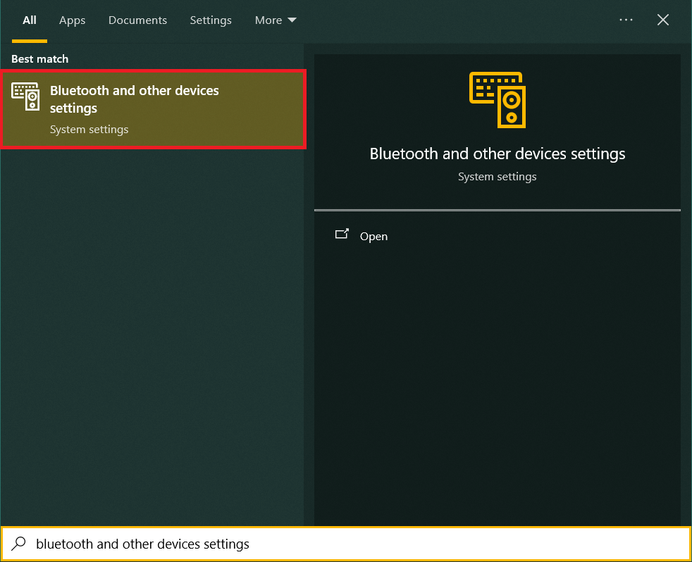
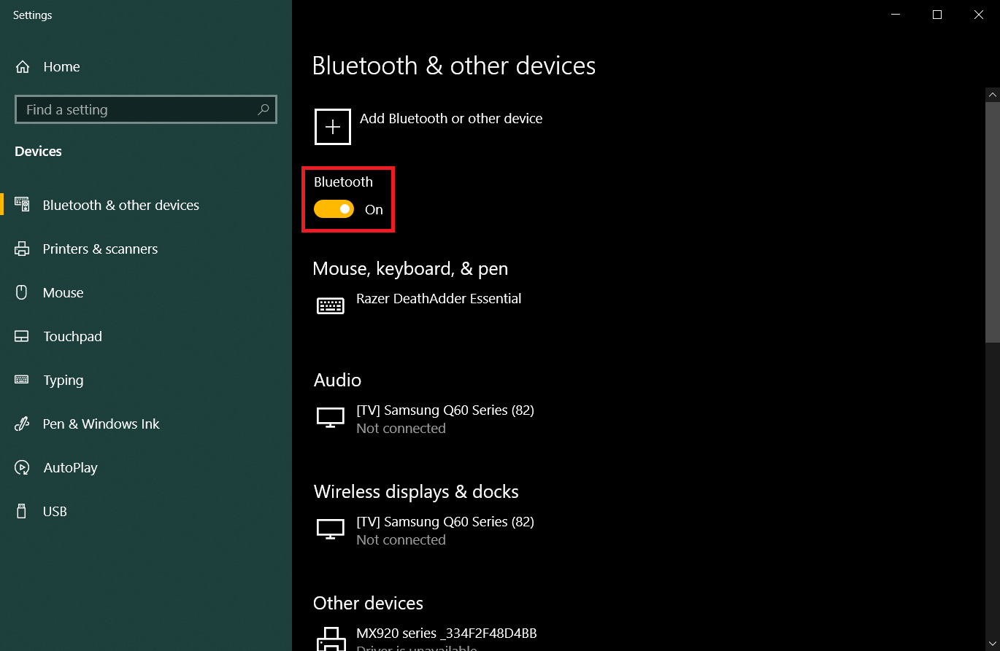
Windows 11
Press the ⊞ Windows key > Type and select "Bluetooth and other devices settings" > Ensure the toggle is "On".
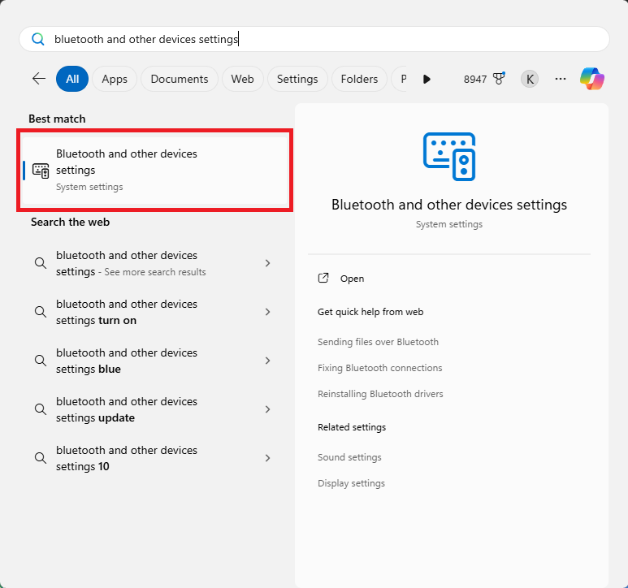
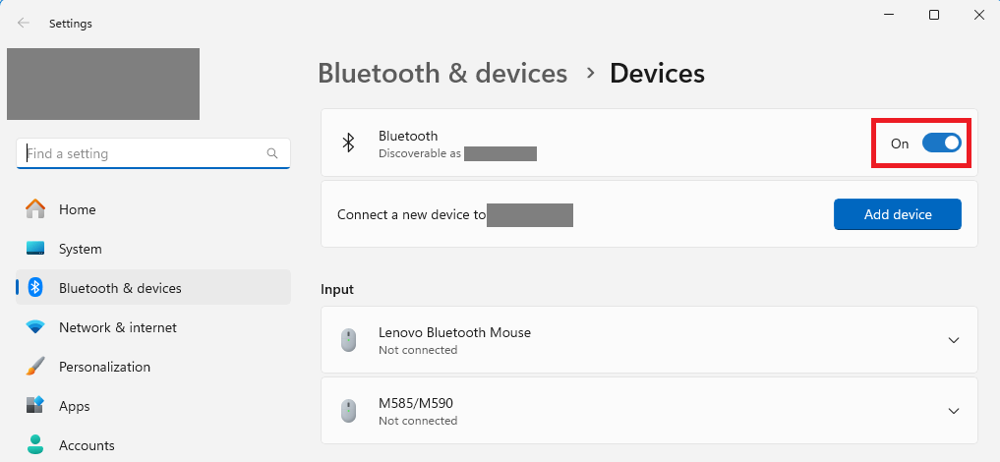
Pairing the DIRT watch to your computer using Bluetooth
⚠️ Warning: You only need to do this ONCE for every new DIRT watch you receive. Please ensure your DIRT watch is fully charged
before going through this step. If you have already done this
before, please skip this process.
💡 Note: There are steps below for Windows 10 and Windows 11 separately. Please look at the appropriate section based on your system setup.
Windows 10
- Open Bluetooth settings.
- Select "Add Bluetooth or other devices".
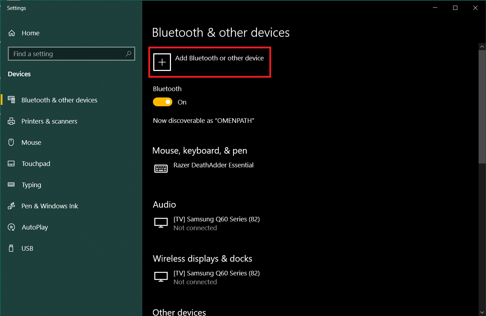
- Select the first option to add Bluetooth devices.
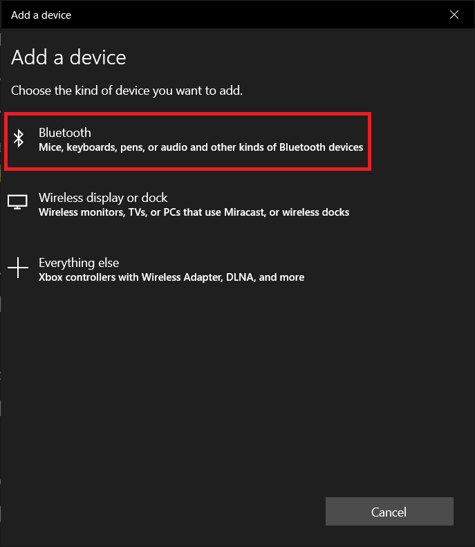
- Select "Verisense-01-xxxxxxxxXXXX" where XXXX matches your participant ID. In this example, the
ID is E474.
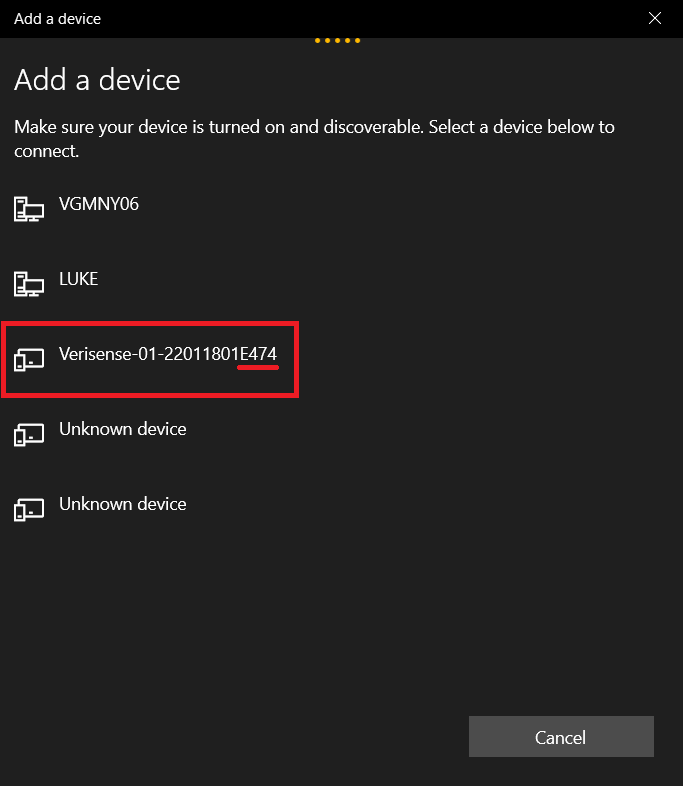
- Enter pin "123456" and connect.
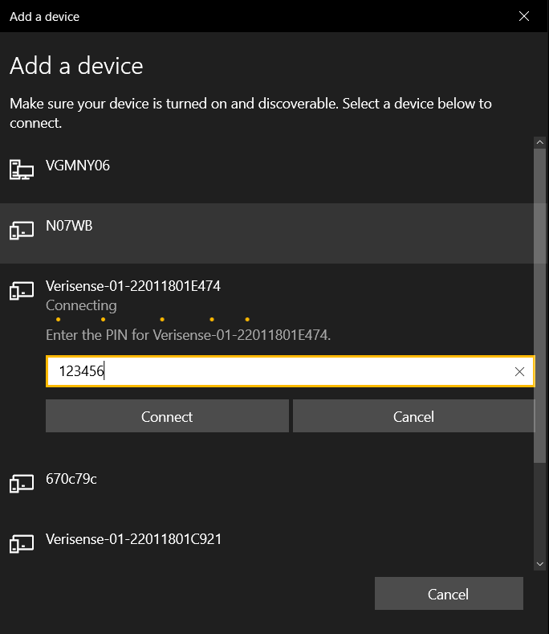
- Press "Done" when complete.
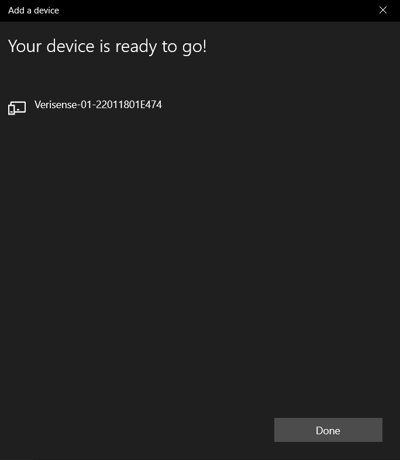
Windows 11
- Open Bluetooth settings.
- Select "Add device".
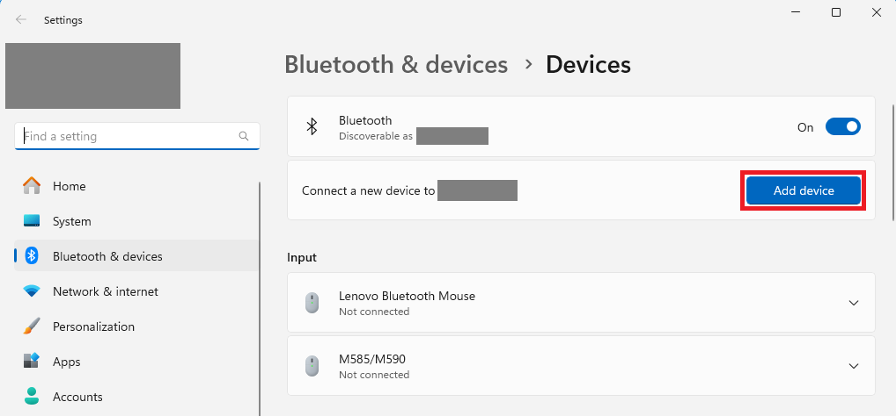
- Select the first option to add Bluetooth devices.

- Select "Show all devices".
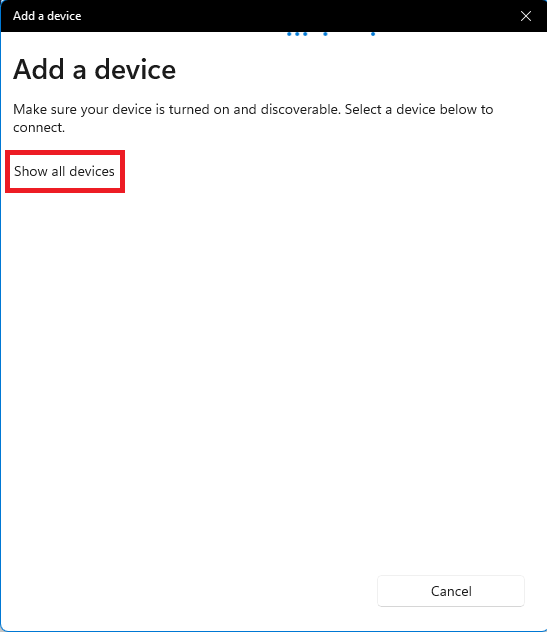
- Select "Verisense-01-xxxxxxxxXXXX" where XXXX matches your watch. In this example, the
ID is E474.
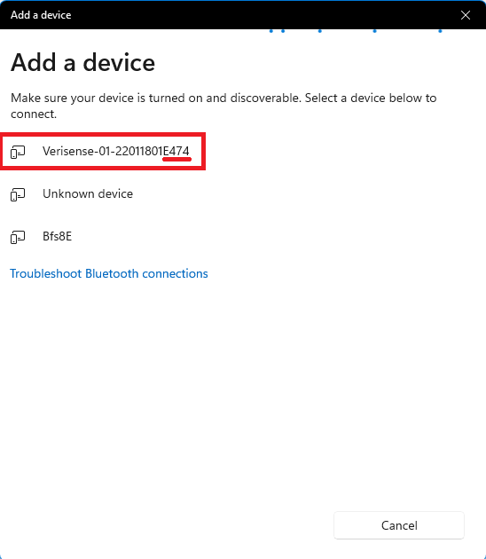
- Enter pin "123456" and connect.
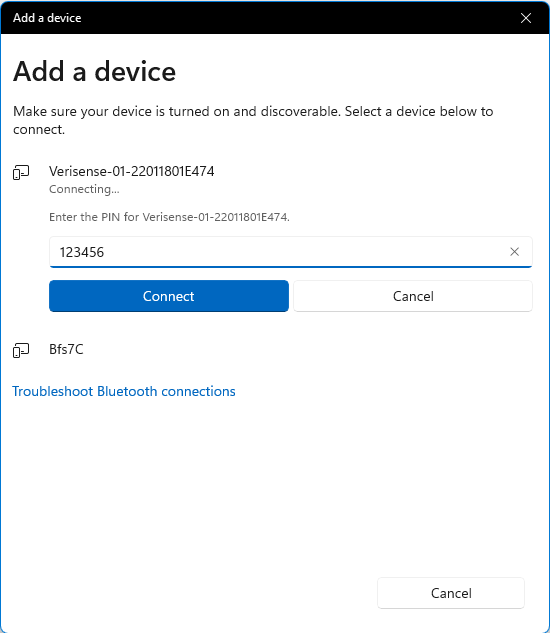
- Press "Done" when complete.
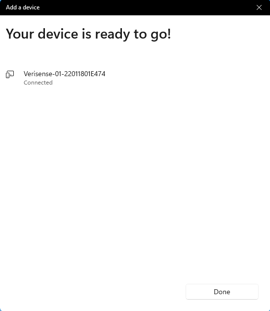